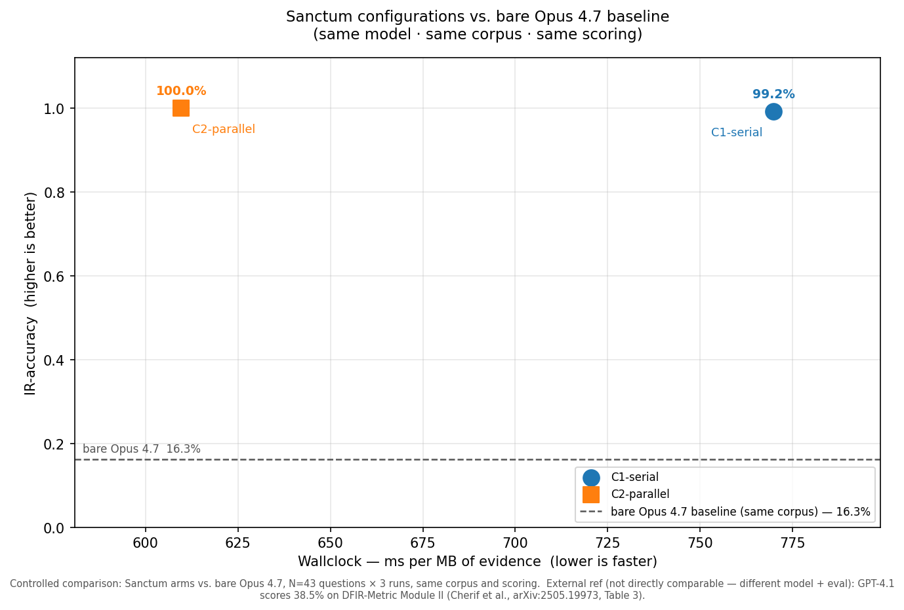

Controlled comparison: Sanctum (C1-serial, C2-parallel) vs. bare Opus 4.7 · N=43 questions × 3 runs · same model, same corpus, same scoring

What the gap measures: structured typed-tool parsers + family-corroboration gate vs. raw evidence bytes, same model. The gap does not isolate parser contribution from gate contribution — a structured-bare ablation would be needed for that. · Corpus: 43-question self-authored subset of DFIR-Metric Module II (Cherif et al., arXiv:2505.19973). · External ref (not directly comparable): GPT-4.1 scores 38.5% on the full DFIR-Metric benchmark — different model, different eval setup.